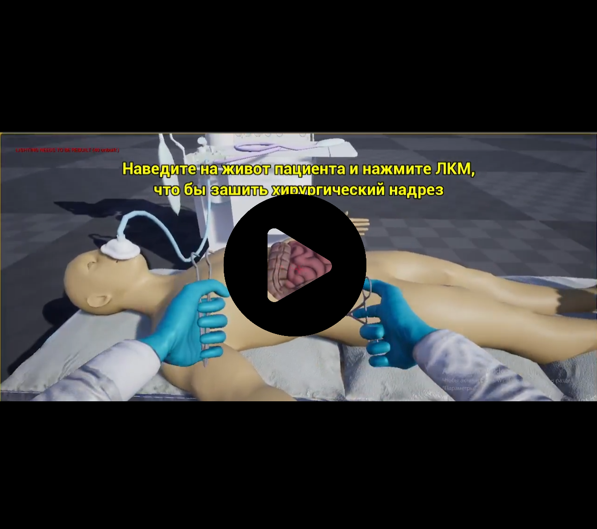
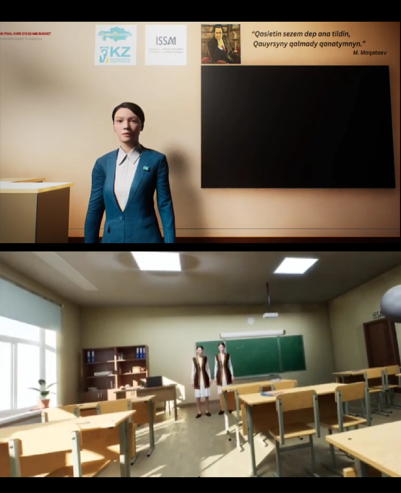

Appendicitis surgery simulator is an interactive educational game that teaches users how to perform an appendectomy.
Designed for high school students to guide them through the surgical procedure in a safe and controlled
environment, helping them understand the steps and explore medical careers.
Key Contributions:
● Developed the architecture and core game mechanics, ensuring a realistic and engaging experience
● Created user widgets and designed tutorial level for the surgery simulator, optimizing the user interface for a more
intuitive learning experience
● Produced animations in Cascadeur, adding realistic surgical movements that improved the tutorial's accuracy and visual appeal

Aibike is a Virtual Teacher, embodied as a photo-realistic avatar, powered by ChatGPT,
Whisper, and Soyle which can make educaiton more immersive, interactive and personalized.
Key Contributions:
● Created custom clothing for an avatar to give her a friendly, teacher-like appearance
● Added a customized 3D model of the Kazakhstan flag badge to enhance the avatar's national identity, adding a
meaningful detail that improved user engagement
● Located and integrated classroom 3D models, setting up a realistic virtual learning environment for user immersion
● Added a dynamic head-and-eye movement feature for the avatar, creating a more realistic interaction
● Adapted the entire project for VR using Oculus Quest 3, providing a fully immersive experience
●
The results of my work led to Aibike being chosen as the flagship project to represent other ISSAI projects at
Nazarbayev University’s Open House Day.

Startup Nomadify aimed to create an AI-driven educational game that teaches the history of Kazakhstan
through interactive quests, 3D models, animations, and an AI assistant. The project aims to enhance student engagement,
provide personalized learning, and reduce teacher workload. It addresses issues like passive learning, lack of
historical visualization, and learning gaps by making history more immersive and interactive.
Key Contributions:
● Assembled and led an 8-member team
● Conducting weekly meetings to ensure progress
● Defined project scope, milestones, and development timeline for structured execution.
● Coordinated tasks across multidisciplinary teams, including game developers, AI engineers, and content creators.
● Created a project prototype and presented it to stakeholders for feedback

The purpose of the Farmers' Market is to create multiplatform applicaiton (web and mobile) that empowers farmers to manage and sell products like
fruits, vegetables, seeds. Additionally, to offer buyers a convenient and reliable access to organic products.
Key Features:
● Led a team of 7 developers, identifying roles and responsibilities.
● Scheduled and conducted weekly meetings, documenting key takeaways.
● Developed system architecture and UML diagrams (class, component, use case, activity).
● Created project documentation on design, database structure, and development.
● Prepared and delivered project final presentation.